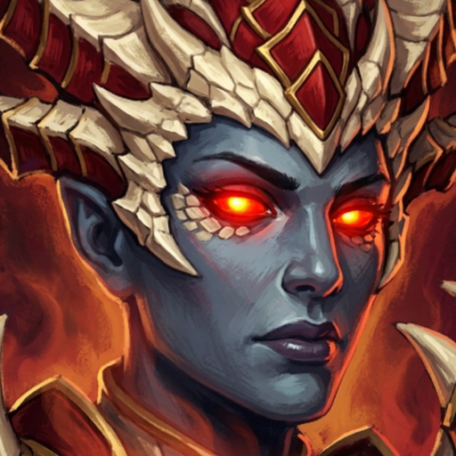

The haunted forest
The Hushwood
Two lanes over the corners, one river across the middle, and the Kraken at the heart of it. Altars on the banks, golems in the wood. Break their nexus.
Thornwake Games · in development
A haunted forest, and two companies in it.
A lane-and-jungle MOBA set in a wood that does not want you there. Sixty-seven champions, each built around one idea and made to stand or fall on it. Two lanes over the corners, one river through the middle, and the Kraken asleep at the heart of it all until seven minutes in.

In motion
Forty-five seconds filmed from a running match, one champion at a time. Nothing here is mocked up.
Play it now
The Wychwood launcher installs the game once, then keeps it current. Each update brings down only the pieces that changed, so patches stay small.
Windows 10 or 11 · 64-bit · a small exe, then about 7 GB for the game
%LOCALAPPDATA%\Wychwood, puts Wychwood on your desktop and Start menu, and downloads the game.What it is
The bones are familiar. Lanes, towers, a jungle, a shop, a nexus to break. What sits on them is a wood full of things that hunt, and a roster where every champion is one honest mechanic followed all the way through.
Gall has no mana and pays in health. Nil has no resource, no ability power, and cannot be revealed. Morvane's candle burns down in combat and relights out of it. Mei counts every blow she takes above her head, and at twelve she becomes the Haunting. Each kit is the idea, all the way down.
Thornpelt wolves in the groves, grasping shades in the hollows, stone sentinels guarding the buff camps. Altars on the riverbanks that pay out fury or swiftness. And in the Hushwood's open central arena, a Kraken worth two hundred and fifty gold to the team that finishes it.
The simulation runs without an engine. Every formula lands with a test, and balance is read off headless soak matches, thousands of them, rather than argued from a feeling. When a number moves, something measured it first.
Ways to play
The haunted forest
Two lanes over the corners, one river across the middle, and the Kraken at the heart of it. Altars on the banks, golems in the wood. Break their nexus.
The big map
The Wardens' Lodge against the Coven. Three lanes and a full jungle, bases in the corners, one river across the middle with a pit at each end of it.
Learn the game
One lane, porter waves, you and a bot. First watchfire kill wins. Every champion's kit, tried against something that hits back.
Host or join
Host or join over Relay: a duel lane, or the Hushwood with joiners filling the bot seats. The session layer is still being built, so this one is a promise for now.
From the wood
Captured from the game as it stands. Nothing here is mocked up.
The roster
Fourteen tanks, seventeen fighters, seven assassins, eleven mages, eight marksmen, ten supports. Each has a passive and four abilities, and every one of them is playable today.
Where it stands
Wychwood began as a Godot prototype and is being rebuilt in Unity 6. The plan is a numbered list, and this is where it is.
| Phase | What | State |
|---|---|---|
| Combat core | Damage funnel, status effects, marks, aggro, progression, death rewards | Done |
| Movement | Cost grid, A* paths, separation, casting and attack seams | Done |
| Kits | Sixty-seven champion kits, each with its own test file | Done |
| The lane | Minions, towers, waves, walls, jungle, fountain, objectives, recall | Done |
| Vision, items, bots | Fog and brush, the shop, six bots that play a full match | Done |
| Presentation | HUD, health bars, telegraphs on every kit, champion and mode select, shop, minimap | Done |
| The match you see | Jungle drawn, aim indicators, shots and swings, sound, gold on a last hit | Done |
| The Hushwood | Rebuilt around corner bases, two L-lanes, one river and an open heart | Done |
| Netcode | Host-authoritative sim and adapter built; session layer and join codes left | In progress |
| Art | Champion models in; painted portraits, props and map dressing under way | In progress |
| Release | No date. It ships when the wood is ready. | Not yet |